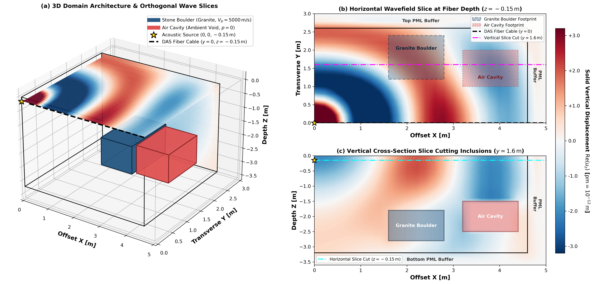
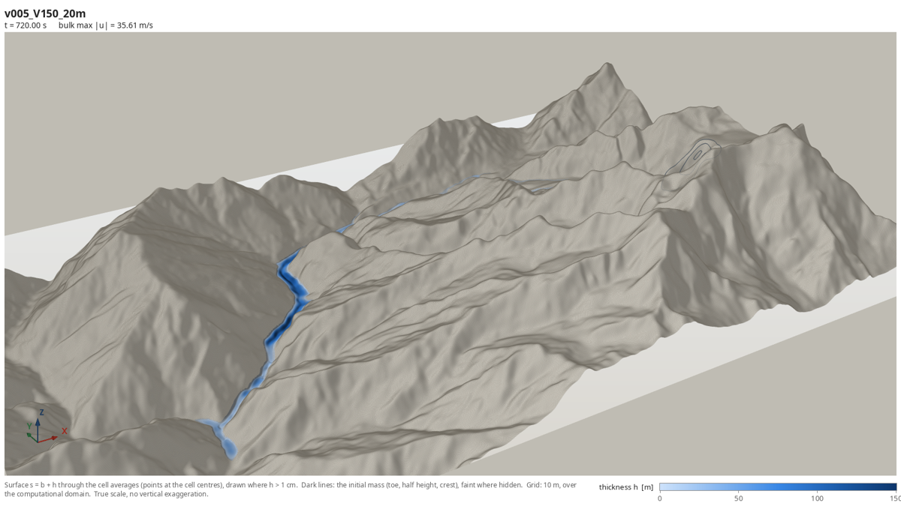

projects
Computational geomechanics, distributed fiber-optic sensing & sponsored research.
Parallel 3D Material Point Method for Drilling & Penetration (Finest Grid: 3.5 Million Particles)
Parallel explicit 3D MPM framework (deal.II-MPM) on p4est octree grids with inf-sup stable Bercovier-Pironneau volumetric projection, Einav-Randolph strain-softening remoulding, structured Modified Cam-Clay, and smeared tension cracking that resolves realistic soil clod formation.
Coupled THM & Phase-Field Fracture in Unsaturated Soils
Matrix-free adaptive Discontinuous Galerkin and variational phase-field framework resolving matric suction, desiccation and hydraulic crack networks, and embankment dam safety with USACE and FEMA.
Real-Time Fiber-Optic 3D Shape Sensing under Uncertainty
Couples distributed optical fiber strain streams with nonlinear Cosserat rod kinematics and Lie-group stochastic error analysis to reconstruct 3D deformed shapes in real time with analytical confidence bounds.

Critical Water Lifelines & Deep Foundations Monitoring (PDECO)
Transforms an operating water pipeline crossing the Hayward Fault into a millimeter-per-year seismic fault sensor (GRL, 2026) and infers pile capacity and eccentric load-transfer via PDE-constrained optimization (CompGeo & ASCE JGGE, 2026).

Ultraweak DPG Solver for 3D Poroelastic Waves & DAS
Unconditionally inf-sup stable 2D/3D ultraweak Discontinuous Petrov-Galerkin Helmholtz solver for three-phase unsaturated poroelastic wave propagation across Biot-Darcy and squirt-flow regimes.

Dynamic Cosserat Rods & Bioinspired Self-Burrowing Robotics
Matrix-free Discontinuous Galerkin simulation of slender rods with frictional contact, supporting the design of seed-inspired aerial penetrating actuators (U.S. Provisional Patent No. 63/877,853) and marine DAS cables.

3D Landslide Runout & Mountain Hazard Chain Modeling
Shock-capturing Discontinuous Galerkin solver for regional-scale 3D landslide propagation, basal friction evolution, and multi-hazard runout over high-resolution digital elevation models.

Sensor-Integrated 3D Concrete Printing & Miniature Probes
Embeds optical fibers directly into concrete filaments during robotic extrusion for pre-failure fracture warning, complemented by custom miniature fiber-optic pore-pressure probes for unsaturated soil testing.
Sponsored Research Projects
-
2024 – PresentNSF GCR: Rooted in Nature · Bioinspired Design of Sustainable Seeding Methods to Improve Forest RegenerationNational Science Foundation, Growing Convergence Research (Award No. 2428641) · University of Pennsylvania, UC Berkeley, Syracuse UniversityRole: Numerical simulation of soil mechanics and multiphase poromechanics. Parallel Material Point Method (MPM) modeling of 3D cone penetration, rotary drilling, and tension cracking in sensitive clays. Sensing design and numerical simulation of bioinspired soft actuators, including a woven-structure single-fiber tactile skin prototype.
-
2025 – PresentUSACE / FEMA: Embankment Dam Safety · Cracking and Seismic LimitationsU.S. Army Corps of Engineers (USACE Dam Safety Production Center, DSPC-T) & Federal Emergency Management Agency (FEMA)Role: Matrix-free Discontinuous Galerkin and variational phase-field modeling of coupled thermo-hydro-mechanical (THM) desiccation and hydraulic crack networks in unsaturated embankment soils. Technical review and coordination on seismic risk and levee safety assessment.
-
2026 – PresentDOE GTO: GeoSecure-RTS · Geothermal Security with Real-Time SimulationU.S. Department of Energy (DOE), Office of Geothermal Technologies (GTO)Role: High-fidelity geothermal model development, calibration, and parametric studies. AI surrogate modeling and model-order reduction for real-time simulation and cyber-attack identification on geothermal power plants, with adaptive meshing and parallel efficiency improvements.
-
2023 – PresentCEC: Integrated Monitoring of Cetacean and Ocean Environmental Impacts from Floating Offshore Wind DevelopmentCalifornia Energy Commission (Award No. CEC-EPC-23-002) · Lawrence Berkeley National Laboratory, UC Berkeley, MBARI, OptasenseRole: High-fidelity numerical simulation of mooring lines and underwater rope structures. Development of efficient solvers for acoustic wave propagation under realistic oceanographic conditions.
-
2019 – 2024NSF-UKRI SitS: Dynamic Coupling of Soil Structure and Gas Fluxes Measured with Distributed Sensor SystemsNational Science Foundation / UK Research and Innovation, Signals in the Soil (Award No. 1935551) · UC Berkeley, Colorado School of Mines, Rothamsted ResearchRole: Development of distributed sensor systems, sensing system design, and signal processing for soil structure and gas flux monitoring.